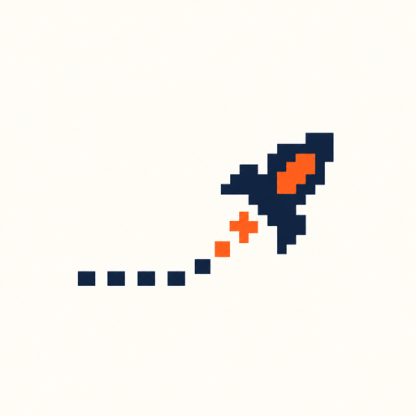

开发中BUILD YOUR FOOTBALL EMPIRE ↗
⚽
俱乐部好运气你的主场GAME / 001
足球大富翁 ↗
掷出下一步，买下你的主场。与朋友一起，用球星技能和一点运气，打造属于自己的足球版图。

偏航游戏OFFCOURSE GAMESINDEPENDENT STUDIO / 独立游戏工作室
世界已经有很多标准答案。
我们想做一点意料之外的游戏。
EST. 2026 · FOLLOW THE FUN, NOT THE ROUTE.
01 / OUR GAMES
掷出下一步，买下你的主场。与朋友一起，用球星技能和一点运气，打造属于自己的足球版图。
每一格，都是一次突破。用数字推理球场上的危险，探索、成长，让葡萄牙少年走向足坛传奇。
作品正在开发中，画面为官网概念图，最终内容以游戏发布版本为准。
02 / THE STUDIO
偏航，是好奇心的方向。
偏航游戏是一家由个人创作者发起的独立游戏工作室。从热爱出发，把脑洞变成玩法，创造轻松、有趣、带点意外的游戏体验。
我们喜欢足球，喜欢游戏，也喜欢问一句：“如果换个玩法呢？”希望每一次偏航，都能遇见意料之外的快乐。
03 / SAY HELLO
想聊游戏、分享灵感，或看看我们接下来的航向？
在 GitHub 找到我 ↗